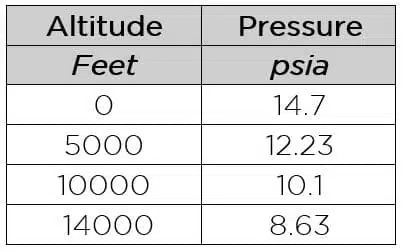
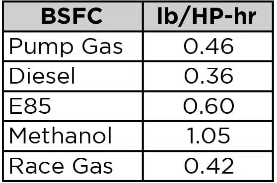
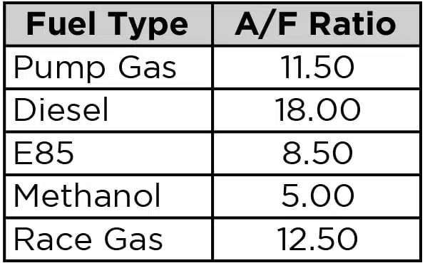
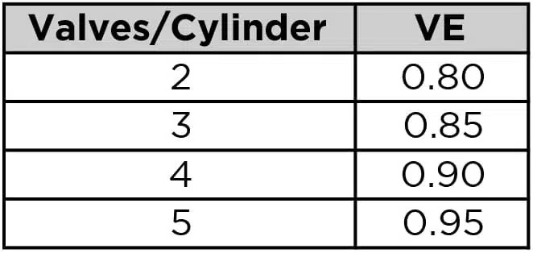
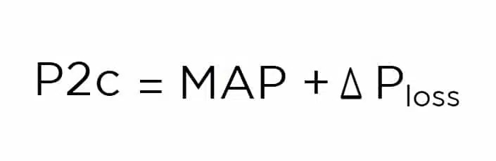

These calculators are to compliment Garrett's articles about turbo selection found here: How To Select A Turbo Part 2: Calculations
Any equations and documentation are credit to Garrett Motion Inc.
Pressure ratio is a variable equation that combines atmospheric pressure with gauge pressure divided by atmospheric pressure. This identifies where the compressor will perform its duty cycle. Knowing pressure ratio (PR) is a key component to selecting the correct turbo for your application. PR is identified on the Y (vertical) axis of the compressor map. Pressure ratio is not an indicator of horsepower but we will get to that in another step.
What is P2c? Absolute outlet pressure
What is P1c? Absolute inlet pressure
PSIg refers to gauge pressure and measures the pressure above atmospheric. A boost gauge pressure reading of 12 means the pressure in the manifold is 12 psi above atmospheric pressure. Depending on the build of the engine, your gauge pressure limits will vary. Stock engines usually have lower ability to handle boost, while highly modified engines can handle much more. Having a boost target is necessary for determining pressure ratio.
PSIa refers to absolute atmospheric pressure. This is standard atmospheric pressure at standard conditions. If you are not at sea level you can substitute a value from the chart below for PSIa.
System Depression: An air filter or a restrictive ducting system will often result in LESS than the atmospheric pressure, especially at higher RPMs. This is because the air filter or ducting adds resistance to the air flow resulting in a pressure loss. Also known as depression, this can result in -1 PSIg or more in some intake systems. The depression adjustment is only made to the (P1c) part of the equation because P1c is Absolute Inlet Pressure.
Mass Flow Rate is the volume of air flowing through a compressor and engine over a given period. This is commonly measured as lbs/min of air flow. This calculation tells us the air flow we need to support our required horsepower target. As a general rule of thumb, Garrett GTX Gen II and G Series turbochargers have the potential to make 100-110 horsepower for every 10 lbs/min of air flow however there are many factors that will impact actual power output including Volumetric Efficiency, fuel quality, and others we will discuss below.
Wa = Air Flow Actual (lb/min)
HP = Horsepower Target (crank)
A/F = Air/Fuel Ratio
BSFC/60 = Brake Specific Fuel Consumption
Things you need to estimate:
Brake Specific Fuel Consumption: (BSFC). BSFC describes the fuel flow rate required to generate each horsepower. General for turbocharged gasoline engines range from 0.50 to 0.60 and higher. Lower BSFC means that the engine requires less fuel to generate a given horsepower. Race fuels and aggressive tuning are required to reach the low end of the BSFC range described above.
Use these inputs for BSFC estimates:

Air/Fuel Ratio: The AFR defines the ratio of the amount of air consumed by the engine compared to the amount of fuel. For gasoline engines, the stoichiometric , A/F ratio is 14.7:1, which means 14.7 parts of air to one part of fuel. The stoichiometric AFR depends on fuel type– for alcohol it is 6.4:1 and 14.5:1 for diesel. So what is meant by a rich or lean AFR? A lower AFR number contains less air than the 14.7:1 stoichiometric AFR, therefore it is a richer mixture. Conversely, a higher AFR number contains more air and therefore it is a leaner mixture.
Use these inputs for AFR estimates:

Formula ( Wa = HP x A/F x BSFC/60 )
Things you need to estimate:
Engine Volumetric Efficiency: VE is how efficient an engine is at moving air through its cylinders. How much goes out vs how much comes in. Peak Volumetric Efficiency (VE) range in the 95%-99% for modern 4-valve heads, to 80% – 95% for 2-valve designs. On a well-tuned engine, VE will peak at torque peak, and this number can be used to scale down VE at other engine speeds. A 4-valve engine will typically have higher VE over more of its rev range than a two-valve engine.
Use these inputs for VE estimates:

Intake Manifold Temperature: Compressors with higher efficiency produce lower manifold temperatures. Manifold temperatures of intercooled setups are typically 100 – 130 degrees F, while non-intercooled engines can reach from 175-300 degrees F.
Considering Pressure Loss: One thing to note is the numbers above do not take into account how much pressure loss exists between the compressor and manifold. Depending on flow rate, charge air cooler characteristics, piping size, number/quality of the bends, throttle body restriction, etc., the plumbing pressure drop can be estimated. This can be 1 psi or less for a very well designed system. On certain restrictive OEM setups, the pressure drop can be 4 psi or greater. For our example we will assume a 2 psi loss.
